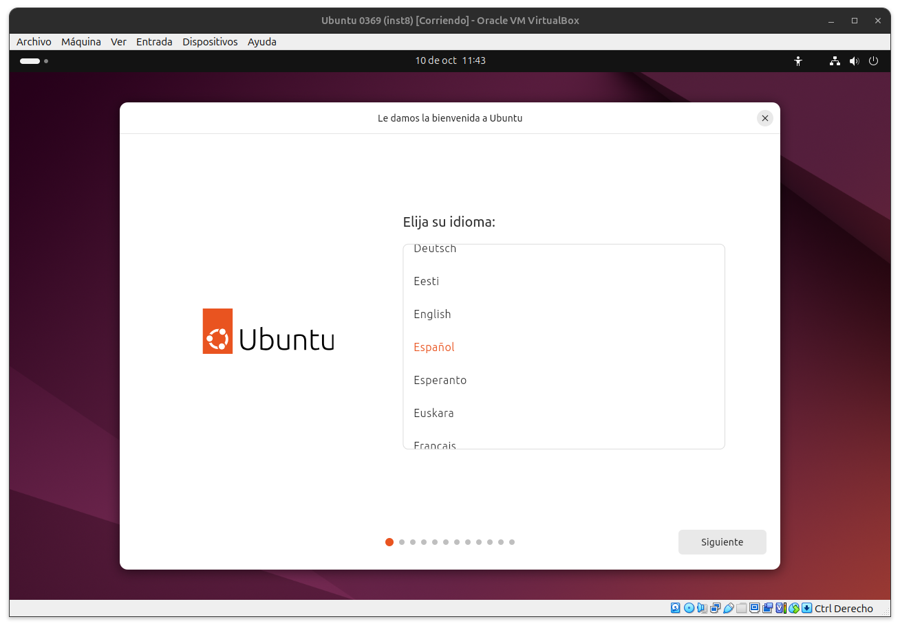

Instal·lacio d'UBUNTU-24.04.1
creacio de la màquina virtual
Arranquem la maquina virtual, li cliquem a "nueva" Tot seguit especifiquen la ubicació de la ISO i la ISO a instal·lar. a la seguent finestra especifiquem el nom d'usuari, la contrasenya i el nom de la maquina Especifiquem tant la memoria RAM, com el número de procesadors de la nostra màquina virtual. Especifiquel el tamany del disc dur de la màquina virtual. l'instal·lador d'ubuntu ens mostra una finestra amb el resum de la configuració de la m'aquina virtual triada.
instal·lació d'ubuntu
Un cop arrancada la màquina virtual amb l'ubuntu, ens dona a triar si volem fer un a instal·lació, obrir l'ubuntu en mòde segur o fer un test de memòria. Triem l'opció d'instal·lar i arranca l'instal·lació de l'ubuntu. ja en l'entorn ubuntu elegim l'idioma del SO  A la següent finestra ens dona l'opció de emprar eines d'accecibilitat. sel·leccionem la disposició del teclat. triem el tipus de conexió a internet. elegim fer una instal·lació d'ubuntu triem l'instal·lació interactiva triem les aplicacions predeterminades. li especifiquem que no volem instal·lar software de tercers, ni compativilitats multimèdia triem borrar el disc triem el nom d'usuari, contrasenya i nom del equip, i que no volem que ens demani la contrasenya cada vegada que iniciem el SO elegim el fus horari on ens trovem revisem que la configuració sigui la correcta i comença l'instalació d'ubuntu un cop finalitzada l'instal·lació reiniciem ubuntu i ja tenim el nostre ubuntu instal·lat